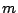
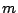
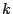
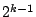
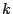
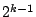

|
Keywords: haplotype inference, genotypes, SNPs, parsimony, integer programming
Abstractly, for a population of  individuals, input to the haplotyping problem (HI) consists of
individuals, input to the haplotyping problem (HI) consists of
 genotype vectors, each of length
, where each value in the vector is either
0,1, or 2. Each position in a vector is associated with a site of
interest on the chromosome. The position in the genotype vector has
a value of 0 or 1 if the associated chromosome site has that state
on both of the two copies (it is a homozygous site), and has
a value of 2 otherwise (the chromosome site is
hetrozygous).
genotype vectors, each of length
, where each value in the vector is either
0,1, or 2. Each position in a vector is associated with a site of
interest on the chromosome. The position in the genotype vector has
a value of 0 or 1 if the associated chromosome site has that state
on both of the two copies (it is a homozygous site), and has
a value of 2 otherwise (the chromosome site is
hetrozygous).
Given an input set of  genotype vectors, a solution to the Haplotype
Inference (HI) Problem is a set of
genotype vectors, a solution to the Haplotype
Inference (HI) Problem is a set of  pairs
of binary vectors, one pair for each genotype. For any
genotype , the associated binary vectors
pairs
of binary vectors, one pair for each genotype. For any
genotype , the associated binary vectors
 must both have value 0 (or 1) at
any position where has value 0 (or 1); but
for any position where has value 2,
exactly one of
must both have value 0 (or 1) at
any position where has value 0 (or 1); but
for any position where has value 2,
exactly one of  must have value 0,
while the other has value 1. That is,
must have value 0,
while the other has value 1. That is,  must be a feasible ``resolution" of into two haplotypes that could explain how was created. Hence, for an individual with  hetrozygous sites there are 
haplotype pairs that can resolve it. Haplotype inference by
computer would be impossible without the implicit or explicit
use of some genetic model, either to assess the biological
fidelity of any proposed solution, or to guide the algorithm
in constructing a solution.
must be a feasible ``resolution" of into two haplotypes that could explain how was created. Hence, for an individual with  hetrozygous sites there are 
haplotype pairs that can resolve it. Haplotype inference by
computer would be impossible without the implicit or explicit
use of some genetic model, either to assess the biological
fidelity of any proposed solution, or to guide the algorithm
in constructing a solution.
One approach to the HI problem that is often mentioned in the literature is called here the Pure-Parsimony approach2: Find a solution to the HI problem that minimizes the total number of distinct haplotypes used. For example, consider the set of genotypes: 02120, 22110, and 20120. There are HI solutions for this example that use six distinct haplotypes, but the solution 00100, 01110; 01110, 10110; 00100, 10110, for the three genotype vectors respectively, uses only the three distinct haplotypes 00100, 01110, and 10110.
The parsimony criteria reflects the fact that in populations, the number of observed distinct haplotypes is vastly smaller than the number of combinatorially possible haplotypes, and this is also expected from population genetics theory. Moreover, the parsimony criteria is at the heart of several, more complex, computational methods for haplotype inference. For example, Clark's method is often interpreted as an attempt to solve the parsimony problem [5], and the method PHASE [6] has been explained in terms of the parsimony criteria [1]. However, the indirect role of the parsimony criteria in existing methods, and the complex details of those methods, makes it hard to access the effectiveness of the parsimony criteria. Further, no paper has previously shown how an optimal pure-parsimony solution can be computed efficiently in a practical range of problem instances.
Here, we do several things. We show how to compute, via integer-linear-programming, an HI solution that truly minimizes the number of distinct haplotypes, i.e., when it terminates, the program is guaranteed to have found the pure-parsimony solution; we explain how to improve the practicality of the integer programming formulation; and we show the results of extensive experimentation we have done to show the time and memory practicality of the method, and to compare its accuracy against solutions found by the methods PHASE and HAPLOTYPER. We also formulate and experiment with two variations of the Pure-Parsimony criteria, that allow greater practicality.
Empirically, the end result is that for haplotyping problem instances of current interest, pure-parsimony can be computed efficiently in most cases. However, it's accuracy is somewhat inferior to the solutions produced by PHASE, although this depends on the number of sites and the level of recombination, and particular choices in the model used to generate the test data.
In more detail, the practicality and accuracy of our approach depends on the level of recombination in the data (the more recombination, the more practical but less accurate is the method). We show that the Pure-Parsimony approach is practical for genotype data of up to 30 sites and 50 individuals (which is large enough for practical use in many current haplotyping projects). Up to moderate levels of recombination, the haplotype calls are 80 to 95 percent correct, and the solutions are generally found in several seconds to minutes, except for the no-recombination case with 30 sites, where some solutions require a few hours. However, in the no-recombination case, other methods are particularly fast and accurate.
While the main point of this paper is to report that Pure-Parsimony solutions can be practically obtained, so that the efficacy of the criteria can be accesses, the level of accuracy observed is a validation of the genetic model implicit in the Pure-Parsimony objective function. Purely randomly picked solutions to the HI problem would correctly resolve only a minuscule fraction of the genotypes, in contrast to the observed 80 to 90 percent accuracy of the pure-parsimony-based method.